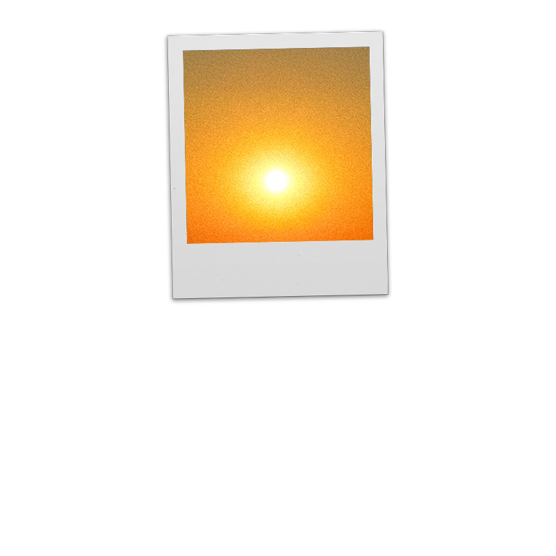
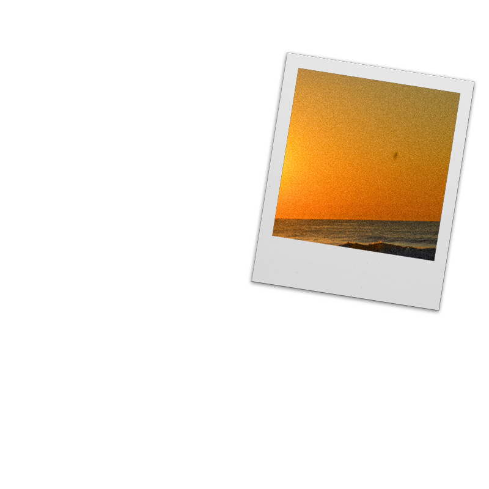
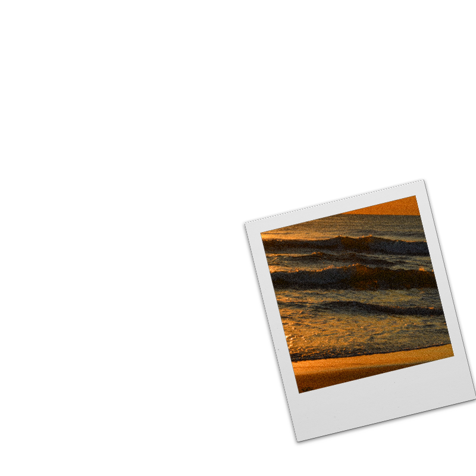

The Taste of Vomit is a rap artist and songwriter from Philadelphia, who uses interpersonal stories, clever wordplay, and multi-sylabic rhyme patterns to tackle subjects such as mental health, love, and grief. With records such as 'The Indoorsman', 'Saudade', 'Carp and Tree', and many more, TOV is no stranger to tapping into and harnessing the full range of his emotions. Through his music, he aims to bring hope to both others and himself; while simultaneously honoring and pushing the boundaries of hip hop as an art form.
Relocating Grains of Sand


